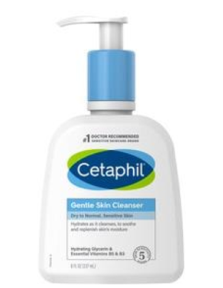
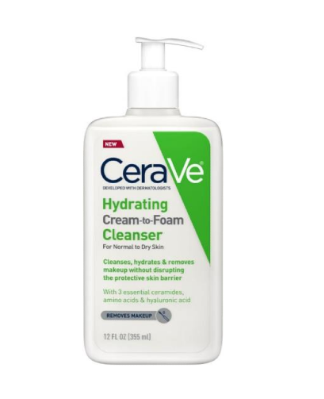
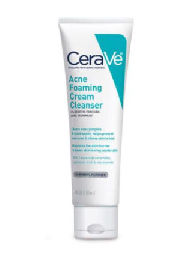
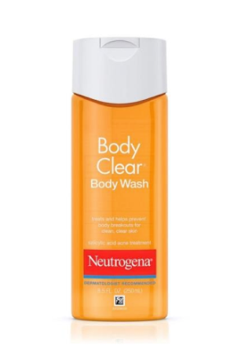
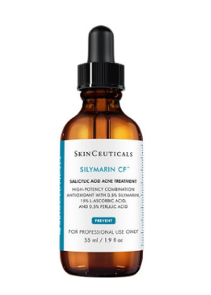

GENTLE CLEANSERS
Cetaphil Gentle Skin Cleanser
This creamy formula is clinically proven to provide continuous hydration after cleansing. Defends against five signs of skin sensitivity,
including dryness, irritation, roughness, tightness, and a weakened skin barrier. Great for dry to normal or sensitive skin.
CeraVe Hydrating Facial Cleanser
Created with dermatologists, CeraVe Hydrating Facial Cleanser is a gentle face wash with ingredients like ceramides and hyaluronic acid that
work to restore the skin’s natural barrier to help the skin lock in moisture. CeraVe Hydrating Cleanser was designed to cleanse and refresh the
skin without overstripping it or leaving it feeling tight and dry.
BENZOYL PEROXIDE CLEANSERS
CeraVe Acne Foaming Cream Cleanser
The CeraVe Acne Foaming Cream Cleanser is formulated to thoroughly dissolve dirt and excess oil while clearing acne with 4% benzoyl
peroxide. Developed with dermatologists, this cleanser works to clear your acne breakouts and helps prevent new blemishes from forming.
Gentle on your skin, CeraVe Acne Foaming Cream Cleanser helps maintain the skin’s barrier with three essential ceramides, leaving your skin feeling
soft and comfortable and reducing acne without dryness or flaking.
Neutrogena Body Clear Body Wash (for body breakouts)
Treat and help clear up body breakouts as you cleanse with Neutrogena® Body Clear® Body Wash with 2% Salicylic Acid. Designed for
acne-prone skin, this refreshing oil-free body wash helps fight breakouts on your back, chest, and shoulders and is made with glycerin to help
nourish dry skin.
VITAMIN C SERUM (BONUS PRODUCT)
SkinCeuticals Silymarin CF
Antioxidant serum formulated specifically for oily and blemish-prone skin types that delivers advanced environmental protection and reduces
oiliness, refines skin texture, and visibly improve skin clarity and fine lines. Use in the AM for effective anti-aging results safe for acne-prone skin!